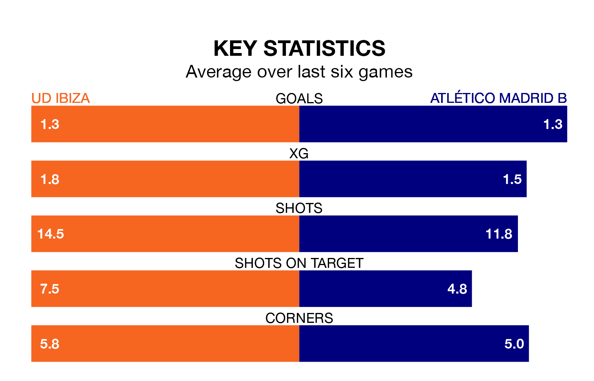

Sunday's early match between UD Ibiza and Atlético Madrid B promises to be one for the neutrals, as two of Primera Division RFEF Group 2's most free-scoring sides go head-to-head.
Ahead of the game at Estadio Municipal de Can Misses, Ibiza and Atlético Madrid B sit third and fourth in the goal-scoring charts, with 52 and 46 goals respectively.
Striker Serge Patrick Njoh Soko leads the way for the home side, having bagged eight goals in their 32 games to date.
And Diego Vicente Bri Carrazoni has been the main man in the opponents' penalty box for Atlético Madrid B, with seven goals.
Ibiza are third in the table after 32 games, of which they have won 18 and drawn nine, earning 63 points.
Atlético Madrid B are seven places behind the hosts in 10th, with 10 wins and 12 draws putting them on 42 points.
Ibiza's Alejandro Gallar Falguera is the league's most creative player, racking up seven assists in 20 appearances so far this season.
For the away team, Bri Carrazoni, and Nabil Zoubdi Touaizi have set up the most goals, having laid on three assists apiece to date.
Ibiza are in mixed form in Primera Division RFEF Group 2, with two wins and two draws from their last six games.
With three wins and a draw over that period, Atlético Madrid B's form is slightly better – they have taken 10 points from 18, compared to the home side's eight.
Ibiza's last match was on April 14, a 1-0 win against CD Atlético Baleares, with Gallar Falguera getting the goal for Ibiza.
Atlético Madrid B lost 1-0 against Málaga CF last time out, also on Sunday.
Updated: 15:40 (UTC), 18/04/24